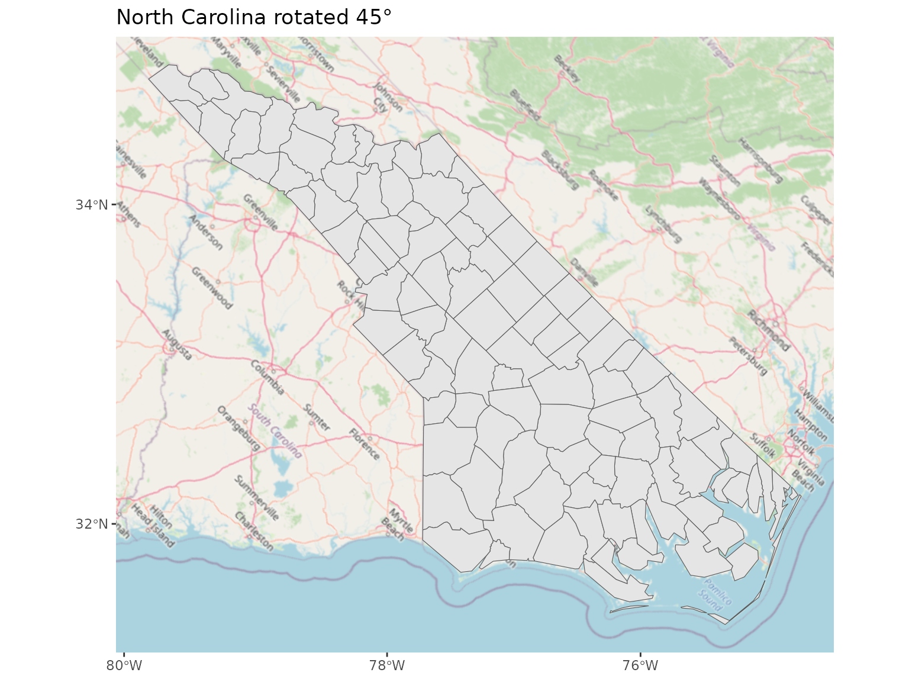
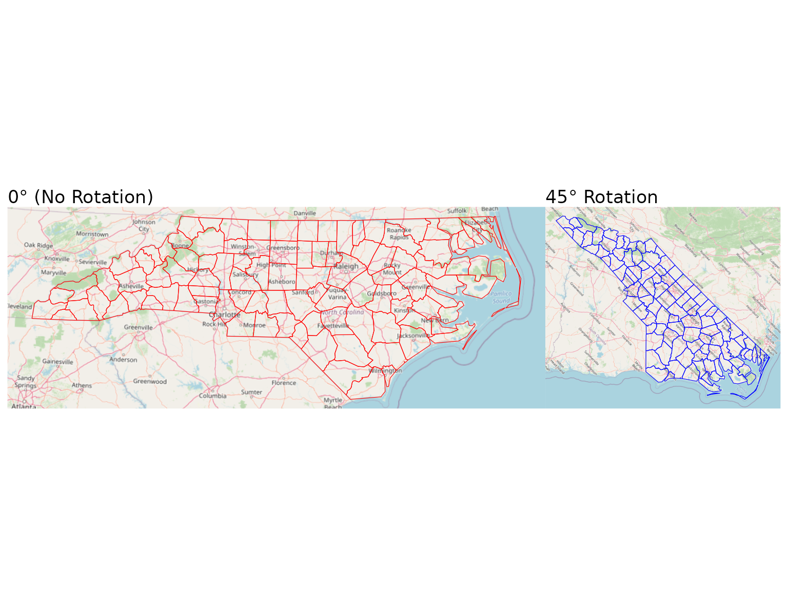
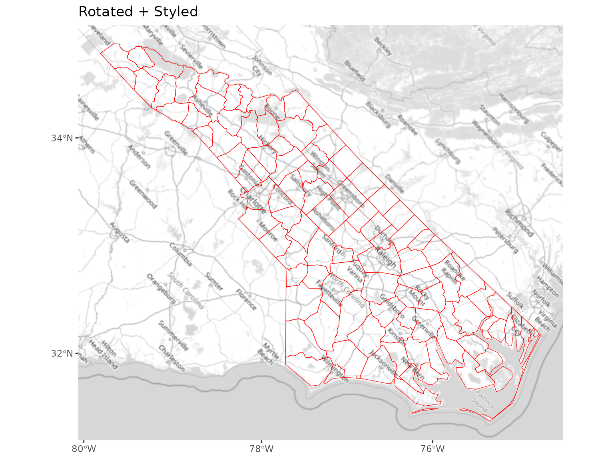
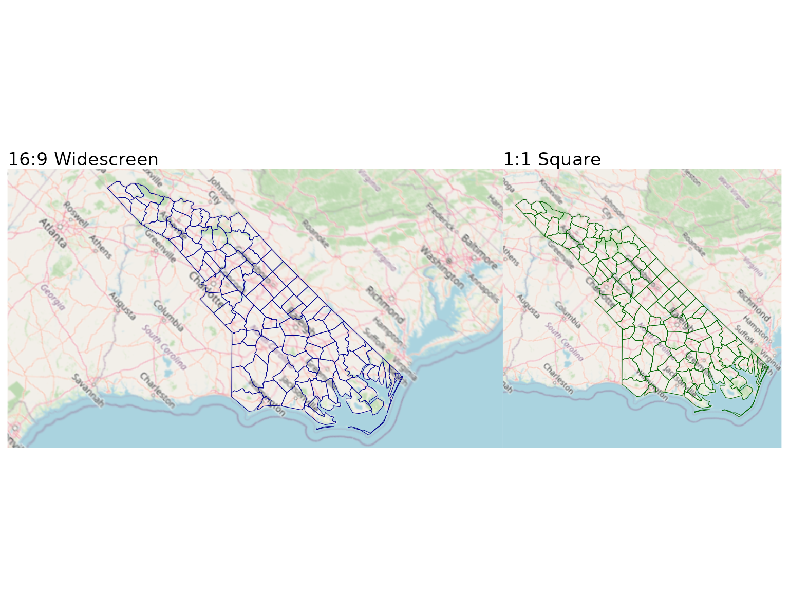
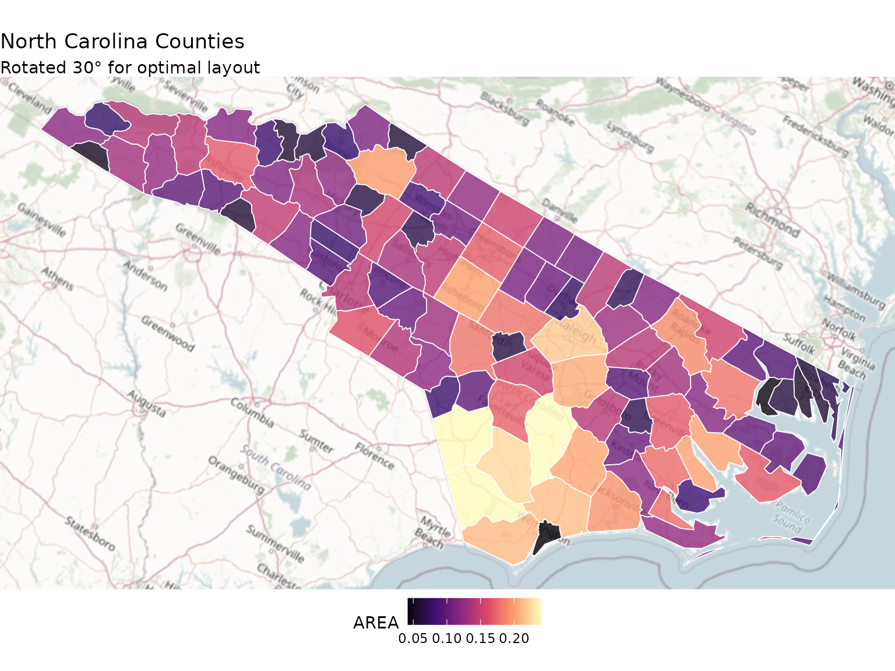

library(ggbasemap)
library(ggplot2)
library(sf)
#> Linking to GEOS 3.12.1, GDAL 3.8.4, PROJ 9.4.0; sf_use_s2() is TRUE
# Load sample data
nc <- st_read(system.file("shape/nc.shp", package = "sf"), quiet = TRUE)Introduction
Map rotation allows you to present your spatial data at an angle, which can be useful for:
- Fitting rectangular maps better on page layouts
- Emphasizing certain geographic features
- Creating visually interesting presentations
- Aligning with natural geographic orientations (e.g., coastlines, mountain ranges)
ggbasemap uses the Oblique Mercator projection to achieve smooth rotation while maintaining accurate geographic relationships.
Basic Rotation
To rotate a map, use the coord_rotate() function:
# Get rotation parameters for 45 degrees
rot <- coord_rotate(nc, angle = 45)
#> Spherical geometry (s2) switched off
#> Spherical geometry (s2) switched on
# Create the rotated map
ggplot() +
add_basemap(nc, bbox = rot$bbox) +
geom_sf(data = nc) +
rot$coord +
ggtitle("North Carolina rotated 45°")
Map rotated 45 degrees
The coord_rotate() function returns a list with:
-
coord: Acoord_sfobject that applies the rotation -
bbox: An expanded bounding box that covers the rotated area -
crs: The coordinate reference system string used -
angle: The rotation angle in degrees
Rotation Angles
Different rotation angles produce different visual effects:
# Create a 2-panel comparison
library(patchwork)
# No rotation
rot0 <- coord_rotate(nc, 0)
#> Spherical geometry (s2) switched off
#> Spherical geometry (s2) switched on
p0 <- ggplot() +
add_basemap(nc, bbox = rot0$bbox) +
geom_sf(data = nc, fill = NA, color = "red") +
rot0$coord +
ggtitle("0° (No Rotation)") +
theme_void()
# 45 degree rotation
rot45 <- coord_rotate(nc, 45)
#> Spherical geometry (s2) switched off
#> Spherical geometry (s2) switched on
p45 <- ggplot() +
add_basemap(nc, bbox = rot45$bbox) +
geom_sf(data = nc, fill = NA, color = "blue") +
rot45$coord +
ggtitle("45° Rotation") +
theme_void()
# Display side by side
p0 + p45
Comparison of rotation angles
Combining with Transformations
Rotation works perfectly with image transformations:
rot <- coord_rotate(nc, 45)
#> Spherical geometry (s2) switched off
#> Spherical geometry (s2) switched on
ggplot() +
add_basemap(nc,
bbox = rot$bbox,
grayscale = TRUE,
contrast = 1.2) +
geom_sf(data = nc, fill = NA, color = "red") +
rot$coord +
ggtitle("Rotated + Styled")
Rotated with styled basemap
Controlling Aspect Ratio
You can control the aspect ratio (width/height) of the rotated map
using the ratio parameter:
# Create comparison of different ratios
rot_169 <- coord_rotate(nc, 45, ratio = 16/9)
#> Spherical geometry (s2) switched off
#> Spherical geometry (s2) switched on
rot_11 <- coord_rotate(nc, 45, ratio = 1)
#> Spherical geometry (s2) switched off
#> Spherical geometry (s2) switched on
p169 <- ggplot() +
add_basemap(nc, bbox = rot_169$bbox) +
geom_sf(data = nc, fill = NA, color = "darkblue") +
rot_169$coord +
ggtitle("16:9 Widescreen") +
theme_void()
p11 <- ggplot() +
add_basemap(nc, bbox = rot_11$bbox) +
geom_sf(data = nc, fill = NA, color = "darkgreen") +
rot_11$coord +
ggtitle("1:1 Square") +
theme_void()
p169 + p11
Different aspect ratios
Common ratio values: - 16/9 for widescreen displays and
presentations - 4/3 for standard presentation format -
1 for square format (social media, posters) - Custom values
like 2 or 0.5 for specific layouts
Complete Example
Here’s a complete example combining multiple features:
library(viridis)
#> Loading required package: viridisLite
# Calculate rotation
rot <- coord_rotate(nc, 30)
#> Spherical geometry (s2) switched off
#> Spherical geometry (s2) switched on
# Create the map
ggplot() +
add_basemap(nc,
bbox = rot$bbox,
saturation = 0.4,
brightness = 1.05) +
geom_sf(data = nc,
aes(fill = AREA),
color = "white",
linewidth = 0.3,
alpha = 0.8) +
rot$coord +
scale_fill_viridis_c(option = "magma") +
theme_void() +
theme(legend.position = "bottom") +
labs(title = "North Carolina Counties",
subtitle = "Rotated 30° for optimal layout")
Complete example with rotation
Next Steps
- Read about Image Transformations to style your basemaps
- Check the FAQ for common questions